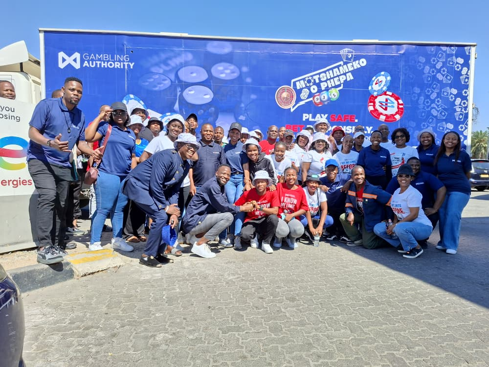
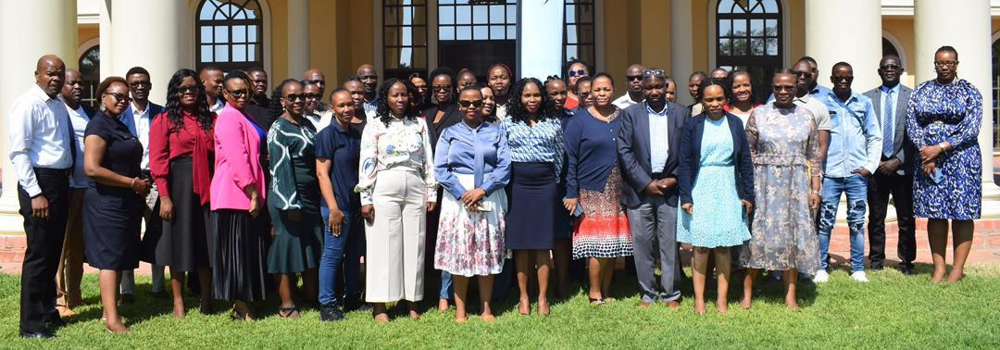

Headlining News
Kelebeng Urges Ceatives to Turn Talent into Sustainable Livelihoods
Botswana’s creative industry could be set for a breakthrough as government pushes to unlock new revenue streams through digital platforms. Minister of Sport and Arts Jacob Kelebeng made the call on Friday while opening the inaugural Creative Industry Summit at the National Museum and Art Gallery in Gaborone.The summit, organised by the Botswana Entertainment Promoters Association (BEPA), was held under the theme “Building a Just, Integrated and Diversified Economy for Creatives” and brought together musicians, filmmakers, promoters and digital creators to discuss challenges facing the sector.
In his keynote speech, Kelebeng said the creative economy must be viewed as a cornerstone of Botswana’s development. “For decades, our economy has been anchored on diamonds,” he told delegates. “But as we step boldly into the future, we recognise that our new diamond is our creativity, our ideas, our talents, and innovations of Batswana, particularly the youth.”He stressed that producing content alone was no longer enough, arguing that the ability to monetise and protect intellectual property would determine the industry’s future. “Content is today’s most valuable currency. Streaming, e-commerce and digital platforms open up new markets, but they must be leveraged wisely,” he said.
Kelebeng revealed that government has engaged Google Africa in Kenya and plans to approach the company’s US headquarters to accelerate the rollout of content monetisation across Southern Africa. Under this arrangement, Botswana would not be treated in isolation but as part of a regional package, giving its creators access to broader markets and potential earnings.To support this shift, the ministry plans to establish a Content Monetisation Hub where artists can gain technical skills, learn to manage intellectual property and explore multiple revenue streams. Kelebeng also appealed to the private sector to partner with government, citing banks, trade institutions and fintech companies as crucial to building a sustainable ecosystem for the industry.
The minister said new legislation, including the Digital Services Bill and the Digital Assets Bill, is being introduced to create a legal and financial framework that encourages investment while protecting creative assets.While the discussions with Google have been welcomed, Kelebeng cautioned that full monetisation will take time. He said progress is expected within the three-year horizon set by the administration, but urged patience from stakeholders.
“Google’s engagement signals that our creative sector can compete internationally while generating real economic value at home,” he said. “But the industry must actively participate, and we need continued support from the private sector to make this vision a reality.For many Batswana creatives, the announcement represents cautious optimism that their work could finally be transformed into sustainable livelihoods, with local talent recognised not just for its cultural impact but also its economic potential.
Francistown Hosts Launch of National Responsible Gambling Campaign

Francistown was the centre of attention as the Gambling Authority unveiled its Motshameko O Phepha campaign, a nationwide programme desinged to promote responsible and regulated gambling in Botswana.The initiative, which will run until March 2026, seeks to create awareness about the risks of excessive gambling, protect vulnerable groups, and ensure operators meet compliance requirements. It will cover more than 500 sites across the country through community events, outreach activities, and digital platforms.
Festivities in Francistown began with a motorcade through the city, turning heads and drawing residents into the spirit of the campaign. The official launch was later held at Cresta Hotel, where the Minister of Trade and Entrepreneurship, Tiroeaone Ntsima, officiated the ceremony.Speaking at the event, Minister Ntsima described the campaign as an important step toward safeguarding communities while also strengthening the gambling industry. “Today is not only about launching a campaign, but about embracing a movement that places people at the centre of the gambling sector,” he said. “With Olympian Nijel Amos as brand ambassador and a team of influencers supporting the cause, this message will spread further, reach more communities, and inspire real change.”
The minister emphasised that gambling, like any form of entertainment, must be enjoyed responsibly. He noted that without strong regulation and awareness, individuals and families could face harmful consequences. At the same time, he praised the Gambling Authority for creating a platform that encourages safe play while holding operators accountable.The campaign’s strategy will combine community education with regulatory enforcement. Roadshows, workshops, and digital messaging will aim to help players make informed choices, while operators will be reminded of their obligations under the law.
For many in attendance, the introduction of Nijel Amos as the face of the campaign was a highlight. The celebrated athlete told guests that discipline in gambling, as in sport, is essential. “This initiative is about self-control and responsibility. Gambling should remain fun, safe, and beneficial, and this campaign is here to help ensure that happens,” he said.The Gambling Authority said the choice of high-profile figures such as Amos and other influencers is a deliberate strategy to connect with young people, who are often the most active in online betting and other gaming platforms. Their involvement, the Authority explained, will help to spread the message in ways that resonate with communities.
Officials also stressed that operators must play their part by adhering to regulations. The campaign is therefore not only about educating the public but also about reinforcing accountability across the gambling sector.By launching in Francistown, the Authority demonstrated its commitment to reaching beyond Gaborone and engaging communities across the country. A spokesperson said the decision underscored the principle that responsible gambling is a national issue, not confined to urban centres.
The rollout of Motshameko O Phepha marks a significant moment for Botswana’s gambling landscape. Over the next 18 months, the Authority hopes to foster a stronger culture of responsibility, ensuring that gambling remains a safe form of entertainment while continuing to contribute to the country’s economic and social development.
SADC
SADC and GIZ Strengthen BOtswana's Efforts to Eliminate Trade Barriers

The Southern African Development Community (SADC) Secretariat, in partnership with Germany’s GIZ through the CESARE programme, hosted a two-day workshop on Non-Tariff Barriers (NTBs) from 8–9 October 2025 in Gaborone. The event brought together customs officials and representatives from key government agencies at major ports of entry, including Sir Seretse Khama International Airport and border posts at Sikwane, Ramotswa, and Tlokweng.
Ms. Motheba Malibeng, speaking on behalf of SADC, said the workshop aimed to enhance Member States’ capacity to identify, report, and resolve NTBs, which remain a major challenge for regional trade. She noted that while many NTBs are reported through the SADC online system, few are resolved, prompting the development of a new NTB Annex under the Protocol on Trade, soon to be adopted by Ministers of Trade.
Ms. Johana Segotlong, Director of Trade Development, emphasized that addressing NTBs is crucial for Botswana’s competitiveness under SADC and the African Continental Free Trade Area (AfCFTA). Participants engaged in presentations, practical exercises, and a live demonstration of the SADC NTB monitoring system. The workshop concluded with a commitment to strengthen coordination among border agencies and promote accountability, advancing the goal of a fully integrated, barrier-free regional market.